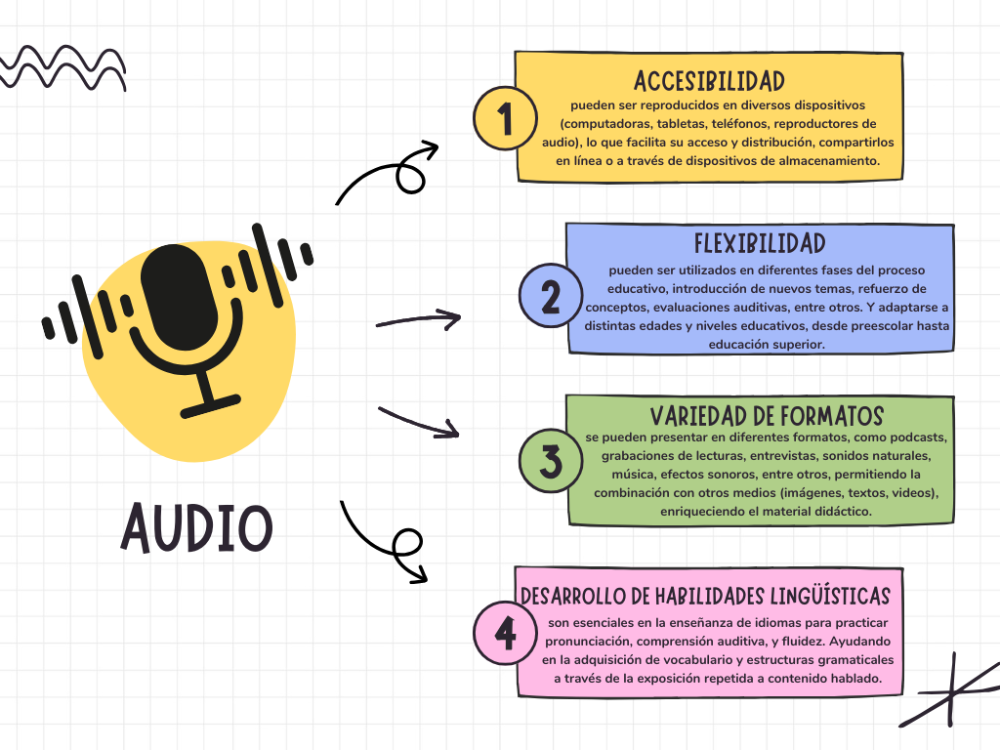

Se logra una mejor percepción a través del sonido, cuando se realizan diferentes asociaciones con base en las estructuras cognitivas. El cerebro es capaz de evocar y asociar mejor imágenes y sonido. (García-Ordaz, 2020)
Cuando se habla del término sonido, se refiere a la propagación de las ondas mecánicas originadas por la vibración de un cuerpo a través de un fluido o un medio elástico. Estas ondas pueden ser o no percibidas por los seres vivos, dependiendo de su frecuencia. (Concepto, 2024)
Para enriquecer la experiencia de aprendizaje en el aula, a continuación, se presentan algunas características a tomar en cuenta:
